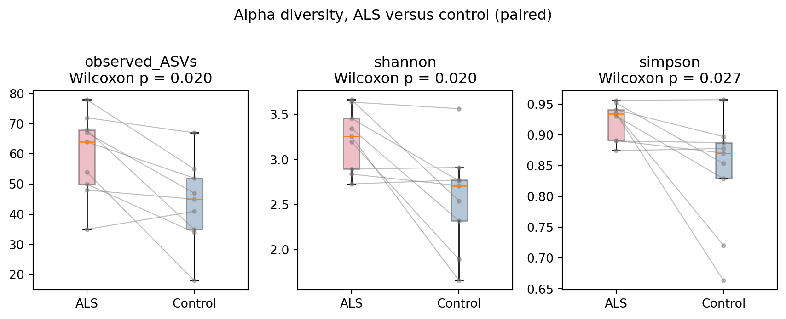

flowchart LR
A["18 SRA runs<br/>(16S V4)"] --> B[DADA2 denoising]
B --> C["276 ASVs<br/>and count table"]
C --> D["DeepTaxa<br/>classification"]
C --> E["SILVA<br/>cross-check"]
D --> F["Genus concordance<br/>~94%"]
E --> F
C --> G["Alpha diversity<br/>and PERMANOVA"]
D --> H["Differential abundance,<br/>F:B ratio, PICRUSt2"]
F --> I["Compare with the<br/>original study"]
G --> I
H --> I
style A fill:#f5efe4,stroke:#7a6343
style B fill:#f5efe4,stroke:#7a6343
style C fill:#f5efe4,stroke:#7a6343
style D fill:#d6efe8,stroke:#1f6b4f
style E fill:#d6efe8,stroke:#1f6b4f
style F fill:#e4dced,stroke:#5a3d75
style G fill:#d8e4f0,stroke:#2a5278
style H fill:#d8e4f0,stroke:#2a5278
style I fill:#f0e2d6,stroke:#994a2a
Reanalysis of an ALS Gut Microbiome with DeepTaxa: A Case Study
Classifying amplicon sequence variants with DeepTaxa, validating against SILVA, and reproducing the original findings
Keywords
16S rRNA, DeepTaxa, taxonomic classification, gut microbiome, amyotrophic lateral sclerosis, amplicon sequence variants, SILVA
Objective. Reanalyze a published ALS gut-microbiome dataset with DeepTaxa, validate the genus calls against an independent SILVA classification, and test whether species-level caution is warranted for this dataset.
Prerequisites. DeepTaxa (pip install deeptaxa-rrna), Python 3.10 or later, and pandas. The classification step uses a CUDA-capable GPU; the analysis below runs on CPU.
Inputs. ASV sequences and count tables from BioProject PRJNA566436, and the region-matched V4 DeepTaxa checkpoint. Outputs. Genus-level concordance with SILVA, community-level comparisons between the ALS and control groups, and a revisited functional claim. Runtime. A few minutes for the analysis on CPU; the ASV classification is precomputed and committed with the tutorial.
Last validated July 2026.
This case study is a methodological demonstration of taxonomic classification and reproducibility. It is not intended for diagnosis, prognosis, treatment selection, or patient-level interpretation.
1 Summary
Short-read 16S amplicons are easy to generate but difficult to classify confidently below the genus rank, and the common advice is to treat species-level calls as unreliable. This case study reanalyzes a published amyotrophic lateral sclerosis (ALS) gut-microbiome dataset with DeepTaxa and evaluates whether that caution is warranted for this dataset. Using the region-matched DeepTaxa checkpoint, 99 percent of reads receive a genus-level assignment, with a mean genus confidence of 0.985. Because a confidence score is not the same as accuracy, the same amplicon sequence variants (ASVs) were independently classified with SILVA: the two methods agree on the genus of about 94 percent of reads. On that basis, the reanalysis recovers the original study’s community-level differences in the same direction and revisits a functional claim that does not hold here. With only nine pairs, these observations are consistent rather than conclusive.
The full pipeline, code, statistics, and figures are in the companion analysis notebook.
The reanalysis follows the pipeline in Figure 1, from the raw reads to a comparison with the original study.
2 The dataset and the question
The data come from a study in which each ALS patient was paired with their spouse as a control, so that cases and controls share diet, household, and environment. The deposited runs cover 9 of the 10 matched pairs, sequenced as 16S rRNA V4 amplicons (515F/806R) on an Illumina MiSeq. The paired design suits a within-subject comparison, and the prior characterization of the cohort makes it a useful test of whether a neural 16S classifier can deliver reliable calls on short reads.
The dataset was published by Hertzberg et al. (2021) and is openly deposited under BioProject PRJNA566436, which holds de-identified 16S sequencing data with no personal health information. The reanalysis below is a methodological demonstration and is not intended as clinical guidance.
3 Classifying with DeepTaxa
These reads are V4, so the analysis uses the DeepTaxa checkpoint (Salah et al., 2026). It assigns a genus to 99 percent of reads at high confidence (mean 0.985). High confidence is not the same as accuracy, however, because it reflects how well the input matches the model’s training regime. The next section checks the calls against an independent reference.
4 Confirming the calls against SILVA
To test correctness rather than confidence, the 276 ASVs were independently classified with the SILVA v138 reference (Quast et al., 2013). After harmonizing GTDB and NCBI names, DeepTaxa and SILVA agree on the genus of about 94 percent of reads, and DeepTaxa assigns a genus name to a further 17.5 percent of reads that SILVA leaves at a higher rank. The genera underlying the findings below are confirmed individually: Prevotella, Blautia, Agathobacter, Parasutterella, and Dorea match directly, while Phocaeicola and Mediterraneibacter match SILVA through documented synonyms (Bacteroides and the [Ruminococcus] torques group, respectively). Two genera, Acetatifactor and Hominicoprocola, fall where SILVA stops at uncultured placeholders and are therefore not independently confirmed.
5 What the data show
Two of the findings are independent of the classifier because they are computed directly from the ASV count table:
- ALS gut communities are more diverse (Figure 2). Observed richness and Shannon diversity are higher in ALS than in matched controls (p = 0.020), as is Simpson diversity (p = 0.027).
- The communities are structurally distinct. A Bray-Curtis PERMANOVA separates ALS from control (p = 0.015, or p = 0.004 when permutations are restricted to the matched pairs), with a clear gradient on the first principal coordinate.

The confirmed taxonomy fills in the biological detail:
- ALS is enriched in Clostridia (36 versus 23 percent of reads, p = 0.027) and in Lachnospiraceae genera, including the butyrate producer Agathobacter, as well as Blautia, Dorea, and Mediterraneibacter.
- ALS is depleted in Prevotella (18 versus 44 percent), the dominant genus of the control microbiomes, a large effect in the same direction the original study reported.
- The bulk Firmicutes-to-Bacteroidetes ratio is not different. The Firmicutes split into a Clostridia fraction that rises in ALS and a Negativicutes fraction that rises in controls, and the two offset each other. The Clostridia enrichment is a specific class-level difference that the bulk ratio does not capture.
The genus-level differences are nominally significant but do not survive multiple-testing correction at nine pairs, so they are best read as hypothesis-generating.
6 Comparison with the original study
The reanalysis is consistent with the original study’s community-level observations, now resting on a classification that an independent reference confirms: ALS communities are more diverse and structurally distinct from their matched controls. The depletion of Prevotella runs in the same direction but does not reach significance here. The strongest functional claim of the original study, that ALS patients lacked butyrate-metabolism genes, is not recovered here. A PICRUSt2 prediction (Douglas et al., 2020) finds those genes present in every sample, with only a weak, non-significant trend toward lower butyrate-kinase-route capacity in ALS. That comparison is the most fragile on either side, since it is a taxonomy-to-genome inference, and would require shotgun metagenomics to settle.
7 Takeaway
The reliability of short-read 16S taxonomy depends on the choice of classifier and reference, and it can be checked rather than assumed. With the appropriate DeepTaxa checkpoint, this V4 dataset resolves to the genus rank, and an independent SILVA classification agrees with those calls for the relevant taxa. On that basis the reanalysis re-examines a published result and adds genus-level resolution to it. The diversity and community-level signals are consistent across methods, though the nine-pair cohort keeps them tentative; the genus and functional layers are exploratory and await a larger cohort.
8 Reproducing this analysis
The companion analysis notebook runs the ALS versus control analysis from the committed ASV table and taxonomy tables, including the SILVA cross-check. For full reproducibility from the raw reads, the scripts in casestudy/pipeline/ download the 18 runs from the Sequence Read Archive and regenerate every table (ASV inference with DADA2, classification with DeepTaxa and SILVA), so the case study can be reproduced from step zero; the committed data lets readers skip straight to the analysis. The DeepTaxa checkpoints are published at huggingface.co/systems-genomics-lab/deeptaxa.
References
Douglas, G. M., Maffei, V. J., Zaneveld, J. R., Yurgel, S. N., Brown, J. R., Taylor, C. M., Huttenhower, C., & Langille, M. G. I. (2020). PICRUSt2 for prediction of metagenome functions. Nature Biotechnology, 38(6), 685–688. https://doi.org/10.1038/s41587-020-0548-6
Hertzberg, V. S., Singh, H., Fournier, C. N., Moustafa, A., Polak, M., Kuelbs, C. A., Torralba, M. G., Tansey, M. G., Nelson, K. E., & Glass, J. D. (2021). Gut microbiome differences between amyotrophic lateral sclerosis patients and spouse controls. Amyotrophic Lateral Sclerosis and Frontotemporal Degeneration, 23(1-2), 91–99. https://doi.org/10.1080/21678421.2021.1904994
Quast, C., Pruesse, E., Yilmaz, P., Gerken, J., Schweer, T., Yarza, P., Peplies, J., & Glöckner, F. O. (2013). The SILVA ribosomal RNA gene database project: Improved data processing and web-based tools. Nucleic Acids Research, 41(D1), D590–D596. https://doi.org/10.1093/nar/gks1219
Salah, R., AbdElaal, K. R., Ghonaim, L., Awe, O. I., & Moustafa, A. (2026). DeepTaxa: A hybrid CNN-BERT framework for 16S rRNA taxonomic classification. Bioinformatics Advances, 6(1), vbag166. https://doi.org/10.1093/bioadv/vbag166